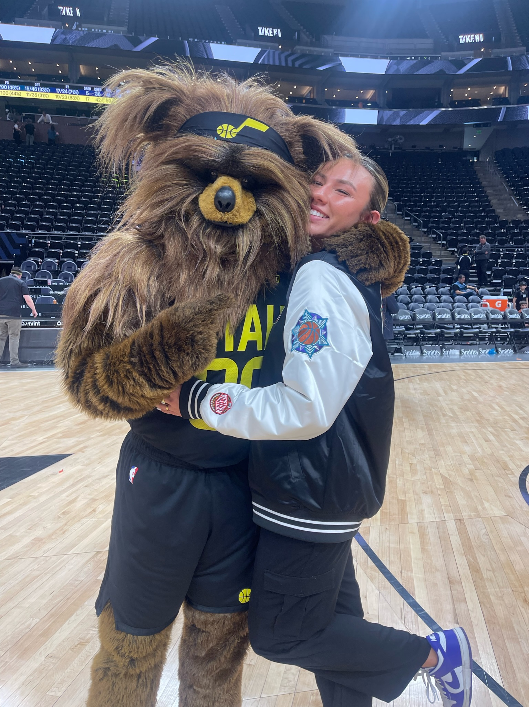

Working at the Delta Center has turned Jazz games into a mix of work and fun.
I love watching fans, partners, and promotions all collide in my role as a Corporate Partnerships intern.
This page is my little guide to an ideal Jazz game night.

Game Night Levels (with Snacks)
Casual Fan Mode
Arrive just before tipoff
Grab basic popcorn and soda
Wear team colors, and dress warm if it's a Mammoth game because the ice can get FREEZING.
Locked-In Fan Mode
Arrive 30–45 minutes early to see warmups
Check out at least one in-game promotion like a CP veteran
Bring a homemade sign or jersey
Superfan Mode
Know the roster by heart
Study advanced stats pre-game
Cheer loudly the entire game
Elite Game Night Snacks
Here are a few S-tier snacks for a great Jazz game night:
Our famous giant pretzel...it's the size of your head
San Diablo stuffed churros. I eat way too many of these